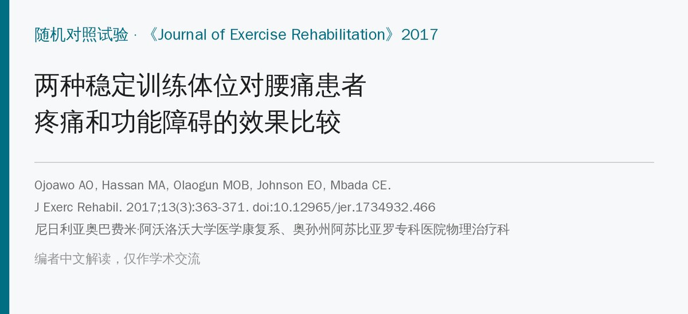
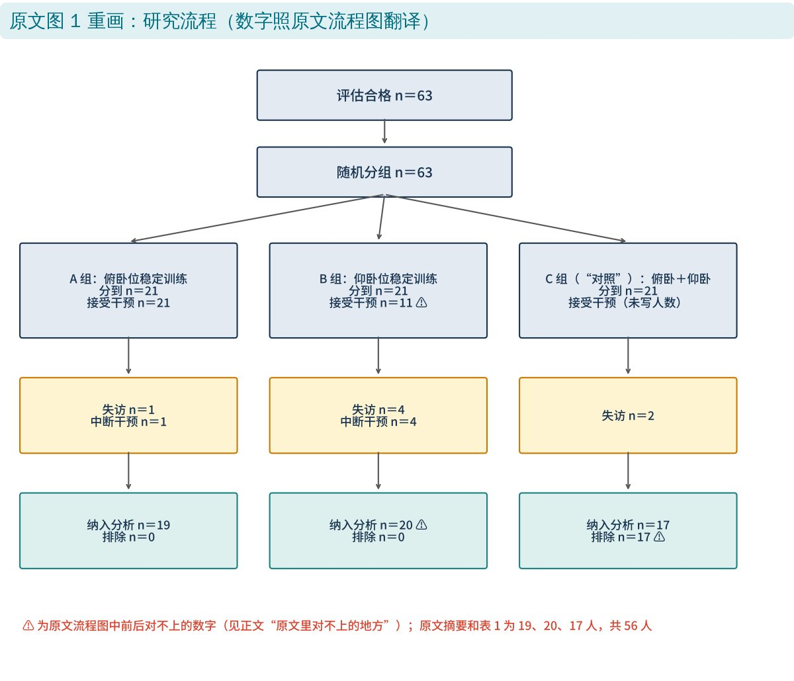
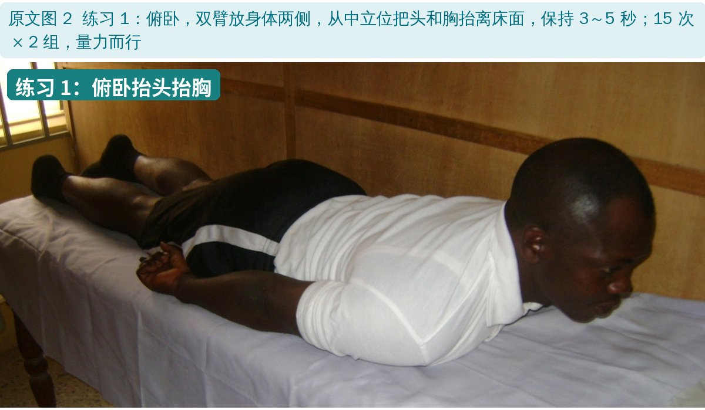
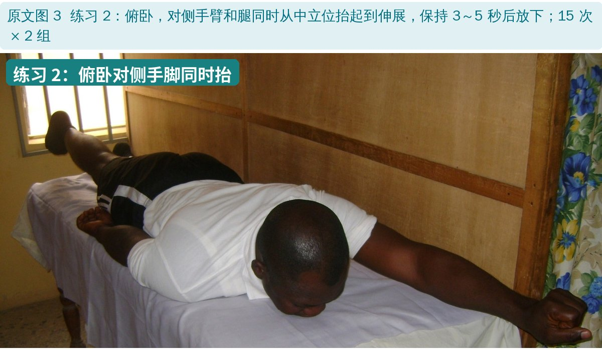
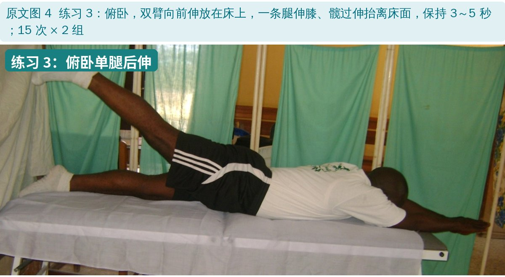
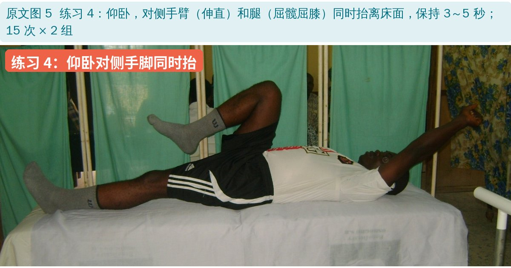
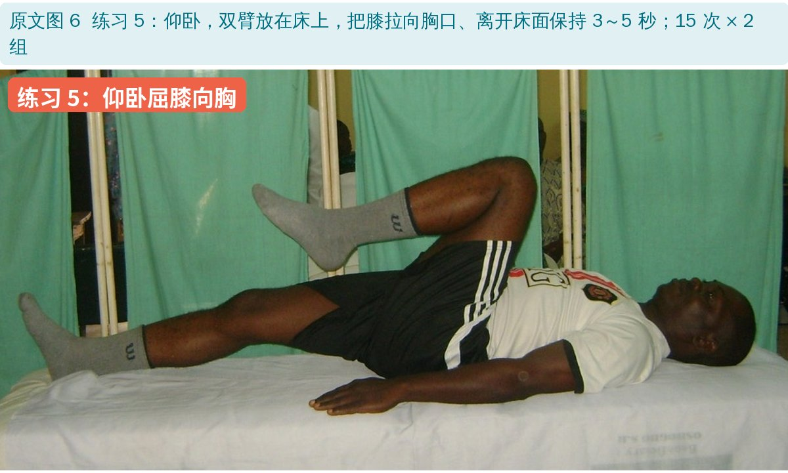
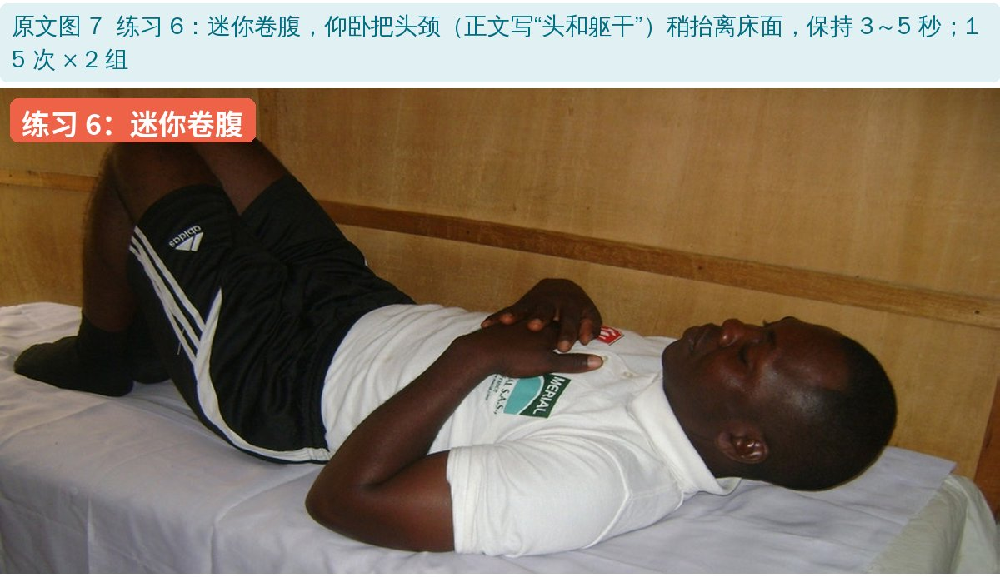
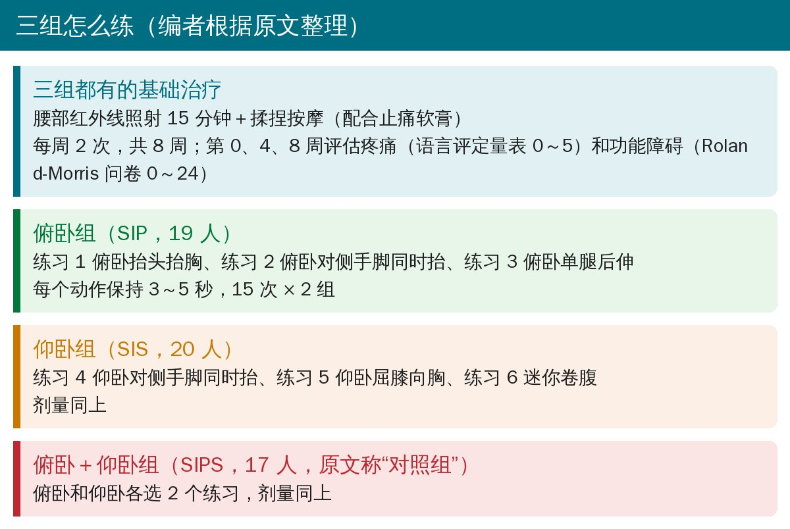
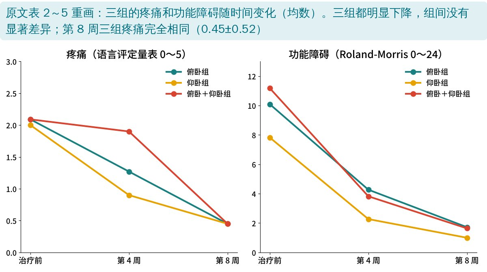

🔖原文信息（编者中文重排）
📚 文献信息
▪ Ojoawo AO, Hassan MA, Olaogun MOB, Johnson EO, Mbada CE. Comparative effectiveness of two stabilization exercise positions on pain and functional disability of patients with low back pain. Journal of Exercise Rehabilitation. 2017;13(3):363-371. doi:10.12965/jer.1734932.466
▪ 作者单位：尼日利亚奥巴费米·阿沃洛沃大学医学康复系、奥孙州阿苏比亚罗专科医院物理治疗科
▪ 文章类型：随机分组的临床试验（56 人完成，三组比较，没有不做训练的对照组）
慢性非特异性腰痛很常见，运动治疗是物理治疗中最常用的手段。稳定训练通过腹肌和多裂肌的协同收缩加强对腰椎和骨盆的控制，可以在多种体位下做。
临床上常用俯卧和仰卧两种体位练不同的肌群，但大多数方案把各种动作、体位混在一起，分不清是哪个体位在起作用。作者比较了单练俯卧、单练仰卧、两者结合的效果。

🔖研究流程（原文图 1 用中文重画）
• 对象：医生转诊的机械性腰痛 ≥3 个月、活动时加重的患者，25～65 岁；排除系统性炎症、椎间盘突出、妊娠相关、骨折、肿瘤、感染等；完成研究的 56 人，平均约 52 岁
• 入组检查：Ely 试验、直腿抬高、前屈、后伸、旋转、沿脊柱按压，至少两项诱发腰痛才入组，再看 X 线排除红旗征
• 分组：抽签随机分到俯卧组（19 人）、仰卧组（20 人）、俯卧＋仰卧组（17 人）
• 基础治疗：三组都做腰部红外线 15 分钟＋揉捏按摩
• 疗程：每周 2 次，共 8 周；第 0、4、8 周评估
• 结局：疼痛用语言评定量表（0 无痛～5 最痛），功能障碍用 Roland-Morris 问卷（0～24，越高越差）
所有动作都是保持 3～5 秒、15 次 × 2 组，量力而行（参照 Sung 2013 的方案）。

🔖原文图 2：练习 1 俯卧抬头抬胸

🔖原文图 3：练习 2 俯卧对侧手脚同时抬

🔖原文图 4：练习 3 俯卧单腿后伸

🔖原文图 5：练习 4 仰卧对侧手脚同时抬

🔖原文图 6：练习 5 仰卧屈膝向胸

🔖原文图 7：练习 6 迷你卷腹

🔖三组的训练方案（编者根据原文整理）

🔖三组疼痛和功能障碍的变化（编者根据原文表 2～5 重画）
| 俯卧组（19 人） | 仰卧组（20 人） | 俯卧＋仰卧组（17 人） | 组间 P | |
|---|---|---|---|---|
| 疼痛 治疗前 | 2.09 ± 0.70 | 2.00 ± 0.70 | 2.09 ± 0.70 | 0.944 |
| 疼痛 第 4 周 | 1.27 ± 0.83 | 0.90 ± 0.83 | 1.90 ± 0.70 | 0.468 |
| 疼痛 第 8 周 | 0.45 ± 0.52 | 0.45 ± 0.52 | 0.45 ± 0.52 | 1.000 |
| 功能障碍 治疗前 | 10.09 ± 4.78 | 7.82 ± 3.97 | 11.18 ± 5.51 | 0.260 |
| 功能障碍 第 4 周 | 4.27 ± 3.22 | 2.27 ± 3.06 | 3.82 ± 3.71 | 0.353 |
| 功能障碍 第 8 周 | 1.72 ± 2.37 | 1.00 ± 1.41 | 1.64 ± 1.96 | 0.641 |
原文表 5：三组疼痛和功能障碍比较（均数 ± 标准差，中文翻译）
• 组内：三组的疼痛和功能障碍在第 4、8 周都比治疗前显著下降（P<0.001）
• 组间：任何时间点三组都没有显著差异——俯卧、仰卧、两者结合效果相当
• 三组年龄、体重、BMI、腰臀围等基线特征没有差别
• 作者解释：所有动作都是等长收缩，等长运动可激活中枢的疼痛抑制机制、促进内源性阿片释放
• 没有不训练的对照组：三组都做了红外线和按摩，症状改善有多少来自稳定训练、多少来自基础治疗或自然恢复，无法区分；原文把“俯卧＋仰卧组”称为对照组，其实也是训练组
• “没差异”不等于“一样好”：每组只有 17～20 人，研究没有按等效性设计，检验不出小差别
• 数据可疑：第 8 周三组的疼痛均数和标准差完全相同（都是 0.45 ± 0.52），俯卧组和合并组治疗前疼痛也完全相同（2.09 ± 0.70）；仰卧组第 4 周疼痛的标准差也与俯卧组相同（0.83）
• 疼痛量表粗：0～5 的语言评定量表分级很粗，治疗前平均约 2 分（中度），改善空间有限
• 设计描述混乱：同一篇文章里同时写“准实验设计”“目的性抽样”“随机对照试验”；没有盲法，没有随访
• 优点：动作简单、不需要器械，照片清楚，适合资源有限的基层；结果提示体位不是关键，可以按患者舒适度和偏好选
• 人数前后不一：方法写邀请 62 人、又写检查了 63 人；流程图里仰卧组“接受干预 11 人”却“纳入分析 20 人”，失访 4 人后最多也只有 17 人；合并组失访 2 人应剩 19 人，却纳入分析 17 人，同时写“排除 17 人”；表 5 写 n＝57，实际是 56 人
• 研究设计自相矛盾：方法先写“准实验前后设计”“目的性抽样”，接着写“随机对照试验”“抽签随机”
• 样本量公式缺失：正文只有公式的说明文字，公式本身和计算结果没有印出来
• 统计数字：表 5 治疗前疼痛的 F 值写 0.57、P＝0.944（F＝0.57 不可能对应 P＝0.944，应为 0.057）；正文写“P>0.468”“P>1.000”；表 4 写“P<0.000”；表 3 的星号与脚注不符；“1..41”
• 第 4 周合并组疼痛：1.90 ± 0.70 几乎没下降，到第 8 周却与其他两组完全一样，原文没有讨论
• 动作描述：练习 6 在方法里写“头和躯干稍抬起”，图注写“头和颈稍抬起（迷你卷腹）”
• 小错：“Laseague”（应为 Lasègue，直腿抬高）；“Rolland Morris”（应为 Roland-Morris）；“稳定训练能增强韧带强度”缺乏依据
• 体位不是关键：俯卧、仰卧或两者结合，8 周后疼痛和功能改善相当，可以按患者舒适度、偏好和家里条件选
• 不能俯卧的人（如腹部不适、肥胖、孕后）选仰卧动作；仰卧不舒服的选俯卧
• 动作简单可在家做：6 个动作都不用器械，保持 3～5 秒，15 次 × 2 组
• 这项研究证据等级不高，稳定训练的效果更多要参考系统综述；它和一般运动训练相比是否更好，本研究也回答不了
欢迎关注骨科康复小黄公众号，获取更多物理治疗的专业知识！
📄参考文献：
Ojoawo AO, Hassan MA, Olaogun MOB, Johnson EO, Mbada CE. Comparative effectiveness of two stabilization exercise positions on pain and functional disability of patients with low back pain. J Exerc Rehabil. 2017;13(3):363-371. doi:10.12965/jer.1734932.466
原文以 CC BY-NC 4.0 协议开放获取，版权归原作者所有。本文为非商业的学术交流中文解读：原文图 2～7 引自原文，图中中文标签为编者所加；流程图和结果图由编者根据原文用中文重画，方案卡为编者整理，表格为中文翻译。仅供学习交流，如有侵权请联系删除。